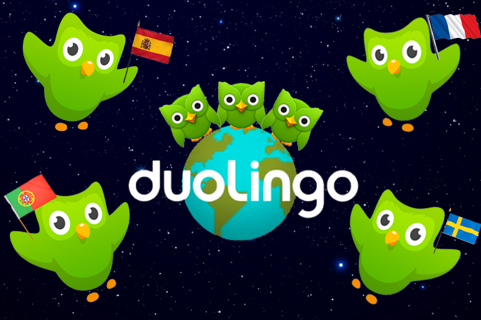

- Duolingo
- Teaches you basics of vocabulary by dividing learning into topics. Also allows you to track progress and join in with friends.
- App and Website

- RealKana
- Hiragana and katakana learning, practice, and tests. Good for beginners learning Japanese syllabics.
- App and Website

- Language Guide
- Language Guide has vocabulary lists with kanji, katakana, and hiragana writings of words as well as pronounciation.
- Website

- Wanikani
- A vocabulary and radical learning website with spaced repetition memorization that teaches on learning through mneumonics. Requires a free account to use.
- Website

- Jisho
- Online dictionary that takes definitions, English, kanji, or romaji and returns words sorted by relevance. Users can learn stroke order for kanji as well.
- Website

- Japanese Onomatopoeia
- Japanese onomatopoeia blog article. Good for intermediate or advanced learners interested in expanding vocabulary and reading manga.
- Blog Article